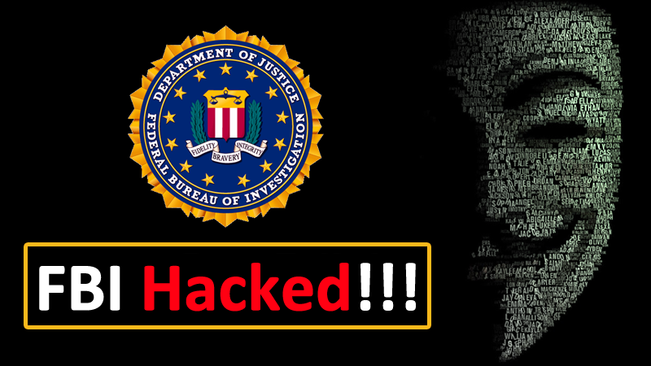

Maksym-Popov
Once a hacker, always a hacker -- by a hacker
Intro
It was late 80s, when computers got in reality. Schools and Colleges had computers and Students were allowed to use computers in their time. Maksym was really interested about the Computer Technologies. He was 15 when he got his first Computer at home. He used to spend hours and hours in front of Screen. Unlike now, the Government didn’t had much control over Internet, so the evil hacker resources was easily available online.
Maksym was hooked up with Credit Card frauds and he earned decent money with it. At age of 20, he also got involved with the eastern European hackers group who used to raid US Companies, steal money and credit-cards, data etc. That was the period when Cyber laws were made strict. In order to live life with ease, Maksym decided to surrender to FBI, FBI also asked him to work for them and help in Securing Internet. Maksym was more then happy to help, as he thought he would make a good career out of hacking and could start his cyber security company, but as soon as he landed in America on Jan 19 2001, he was taken under custody and sentenced to jail for his previous hacks.
Maksym was betrayed and felt bad for such act of FBI. After few months, the hacks cases were increasing and Government had to do something about it. So they asked Maksym to help them, after 28 months later when He landed in US, he was set free. Maksym went to his home town Ukraine.

After few days, Maksym called FBI saying hackers had hacked into FBI system and can use it to cause problem to FBI. He offered FBI to help them secure them and asked for fee of $10,000. A hacker Leonard Sokolov was behind this attack. On Feb 10 2005, a bombshell landed, other corporation in US had been under cyber attack. Hacker Leonard was behind this hack too, as Maksym had helped FBI previous attack, he was called for help, this time he was offered with hug amount as his assistance fee.
But later it was known that, Leonard Sokolov and Maksym Popov had been working together all the time and they tricked FBI to buy their Services, thus Maksym was successful to Start his Computer Security and FBI was his first client.
This tells us, we cannot compromise with Hacker. Hackers gonna hack, no matter what. It companies and organizations responsibilities to make sure they maintain the work ethic and be good with their Employee specially Hackers 🙂
See you in next blog, till then have a good day and babye!!
© hackkeencyber